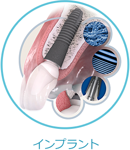
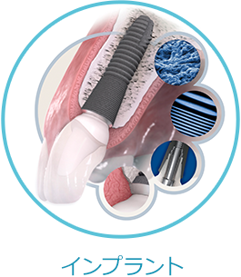

歯周病を中心に
考えた治療
患者さまの将来のお口の状態を見据え、歯周病予防と治療を中心に考え治療をしています。
徹底した治療説明
患者さまの将来のお口の状態を見据え、歯周病予防と治療を中心に考え治療をしています。
地域密着型の
歯科医院
地域の皆さまにとっての「頼れる歯科医院」であるべく、通いやすい歯科医院を目指します。
大学病院との連携
より専門性の高い治療を行なうために、大学病院との密接な連携を図っています。

患者さまの将来のお口の状態を見据え、歯周病予防と治療を中心に考え治療をしています。
患者さまの将来のお口の状態を見据え、歯周病予防と治療を中心に考え治療をしています。
地域の皆さまにとっての「頼れる歯科医院」であるべく、通いやすい歯科医院を目指します。
より専門性の高い治療を行なうために、大学病院との密接な連携を図っています。
 



| 2020/12/20 【冬期休暇のお知らせ】 １２月２８日（月）～１月３日（日）まで休診とさせて頂きます。 また１２月２４日（木）の午後は院内清掃・消毒のため休診とさせて頂きます。宜しくお願い致します。 |
| 2020/11/01 １１月５日（木）診療時間について セミナー出席のため、１１月５日（木）は１８：００（最終受付１７：３０）とさせて頂きます。 ご迷惑をお掛け致しますが宜しくお願い致します。 |
| 2020/08/02 【臨時休診と振替診療のお知らせ】 ９月１０日（木）は院内研修のため臨時休診とさせて頂きます。 ９月１１日（金）は振替診療致します。 宜しくお願い致します。 |
| 2020/12/20 【冬期休暇のお知らせ】 １２月２８日（月）～１月３日（日）まで休診とさせて頂きます。 また１２月２４日（木）の午後は院内清掃・消毒のため休診とさせて頂きます。宜しくお願い致します。 |
| 2020/11/01 １１月５日（木）診療時間について セミナー出席のため、１１月５日（木）は１８：００（最終受付１７：３０）とさせて頂きます。 ご迷惑をお掛け致しますが宜しくお願い致します。 |
| 2020/08/02 【臨時休診と振替診療のお知らせ】 ９月１０日（木）は院内研修のため臨時休診とさせて頂きます。 ９月１１日（金）は振替診療致します。 宜しくお願い致します。 |
| 【住所】 | 〒242-0023 神奈川県大和市渋谷6-10-4 サニーハイツ高座渋谷1F 小田急電鉄江ノ島線「高座渋谷駅」徒歩1分 |
|---|---|
| 【電話番号】 | 平日 9：00～19：00 （休憩13：30～15：00） （最終受付 昼13：00、夜18：30） 土曜 9：00～18：00 （休憩13：30～15：00） （最終受付 昼13:00、夜17:30） 日曜 9：00～13：00 （最終受付 12：30） |
| 【休診日】 | 金曜日と祝日 |
| 【提携駐車場あり】 | 当院の提携駐車場はクリニックのすぐ横の「IP S THE PARK ザパーク 高座渋谷 第２ 駐車場」駐車後、清算機にて「駐車証明書」を 発行し、クリニックまでご持参下さい。 駐車証明書がないと駐車料金のサービスは出来 ませんのでご了承下さいませ。 当院での治療時間分のみのサービスとなって おります。 |
高座渋谷歯科クリニック
| 【住所】 | 〒242-0023 神奈川県大和市渋谷6-10-4 サニーハイツ高座渋谷1F 小田急電鉄江ノ島線「高座渋谷駅」徒歩1分 |
|---|---|
| 【電話番号】 | 平日 9：00～19：00 （休憩13：30～15：00） （最終受付 昼13：00、夜18：30） 土曜 9：00～18：00 （休憩13：30～15：00） （最終受付 昼13:00、夜17:30） 日曜 9：00～13：00 （最終受付 12：30） |
| 【休診日】 | 金曜日と祝日 |
| 【提携駐車場あり】 | 当院の提携駐車場はクリニックのすぐ横の「IP S THE PARK ザパーク 高座渋谷 第２ 駐車場」駐車後、清算機にて「駐車証明書」を 発行し、クリニックまでご持参下さい。 駐車証明書がないと駐車料金のサービスは出来 ませんのでご了承下さいませ。 当院での治療時間分のみのサービスとなって おります。 |
Copyright (C)神奈川県大和市の歯科医院 高座渋谷歯科クリニック. All Rights Reserved.
Copyright(C)
神奈川県大和市の歯科医院 高座渋谷歯科クリニック.
All Rights Reserved.